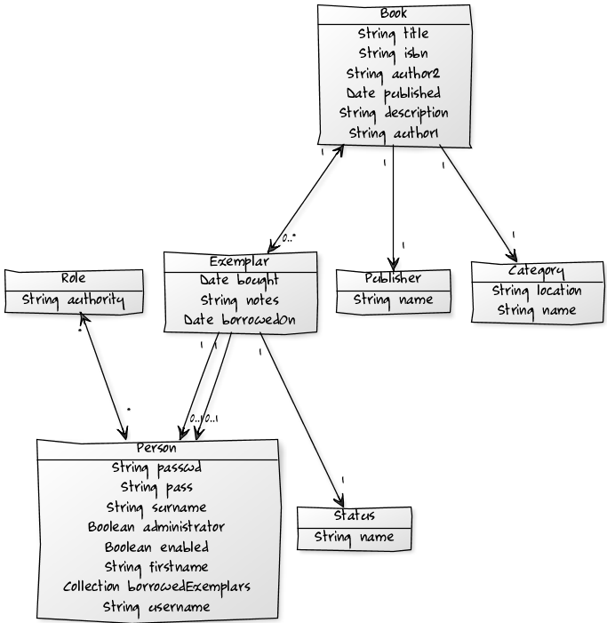
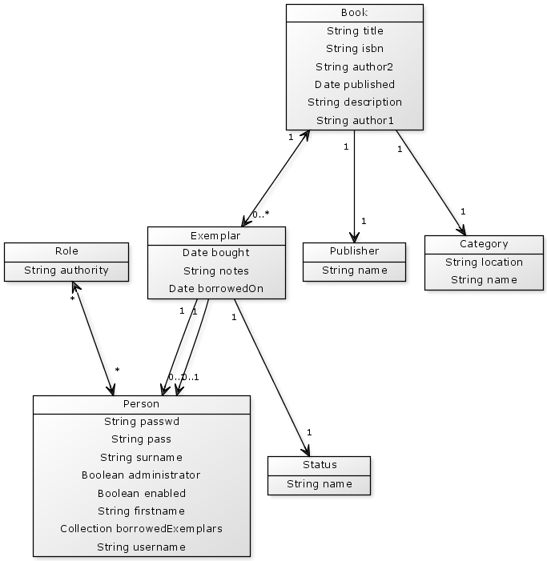
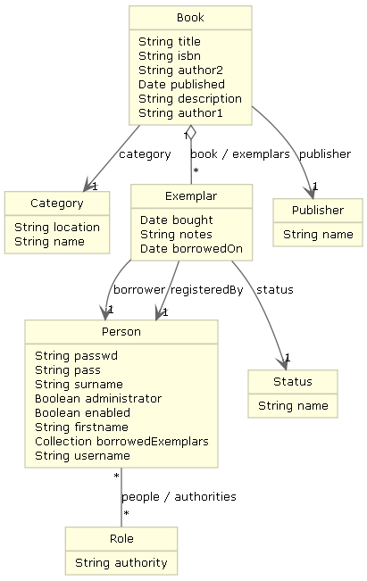

This memo show how to generate UML diagrams from a Grails domain model by comparing two Grails plugins.
Today I tried some Grails plugins that generate UML class diagrams from the existing domain model in an Grails application. I found the following two plugins in the offical Grails plugin repository to play with.
The application I used is a small book management app that manages a couple hundred books at my workplace.
First I tried the Create Domain UML plugin. This plugin is very easy to install and actually consists only of one custom Grails script called CreateDomainUml.groovy.
To generate the diagram the yuml.me service is used. The service is totally free according to the faq section. But still his might be a problem for some people as they cant send any source codes of there program across the internet. Well, you could run your own yuml service by buying the software and run it on an internal server.
To install the plugin into your Grails application simply enter the following command line command.
grails install-plugin create-domain-uml
To generate a class diagram just enter:
grails create-domain-uml
Ok enough texting. Let's see what the plugin can do for us.
 The plugin creates a HTML-File and puts it into the applications root folder. On the page you see four links directing to www.yuml.me. Two of them will generate a Top Down class diagram (scroffy/orderly) as you can see above and the the other two a Right Left version of the class diagram (scroffy/orderly).
Second up to try the Class diagram plugin. This plugin is not that easy to install. First you need to download and install Graphviz. Graphviz is an open source graph visualization software licensed under the Common Public License Version 1.0.
The installation can be triggered by executing the following command line command.
grails install-plugin class-diagram
After some configuring and starting up your Grails application class diagrams can be generated by invoking http://localhost:8080/classDiagram. The result could look like the following.
The plugin comes with a mass of config possibilities I had not a deep look into. There you can change the diagrams direction (TopDown/RightLeft), appearance and level of detail.
Little downsite of the plugins is that its views depend on JQuery so might look ugly without. But it is still possible to generate the desired diagram.
Create Domain UML is way easier to install and has fancy but not so detailed diagrams.
Class diagram plugin is not so easy to install and has a lot configs. The diagram itself does not look so nice but is more detailed.
For my docs I used Class diagram plugin although it doesn't look so neat. For me it was more important that the diagram shows all details of the model.
Hopefully we will see some improvements to the Create Domain UML plugin, because it is easy to use and looks nice.
Date published: 2010-01-23
Date modified: 2010-01-23
Keywords: UML, Grails